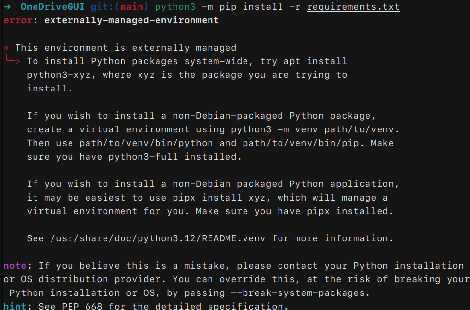

不是从零开始的 Ubuntu 使用指南
我在去年购入了一台二手的 thinkpad x1 carbon 2018，我在上面安装了 Ubuntu 22.04 LTS，并小小地体验过类 Unix 系统的便利。
不过，我一直没有下定决心迁移到 Linux 的工作流。这主要因为 Linux 下的软件生态和 Windows 下的软件生态不同，我需要花时间去适应，寻找一些软件的替代品。而作为一个 Linux 菜鸟，任何一个小问题都可能将我卡住，使我被迫花费大量的时间寻找解决方案。
当然，人是会成长的。现在，我已经在 Ubuntu 的服务器上实际完成过一些小工作，也在 Windows 下使用过 WSL2，有一些基本的命令行操作经验和 Linux 系统的基本知识。我觉得现在是时候将我的工作流从 Windows 转移到 Linux 了。
因此，我希望声明的是，这篇文章不是一篇从零开始的 Ubuntu 使用指南。我不会介绍如何烧录镜像，如何安装 Ubuntu，如何配置网络，如何安装软件等等。我会假设你已经有一些简单的 Linux 使用经验，或者至少有一定的命令行操作经验。
这篇文章会是：
- 一篇关于 Ubuntu 实用软件的简短使用指南
- 一篇介绍我如何将工作流从 Windows 转到 Linux 操作系统的博客
- 一篇介绍如何在 Ubuntu 上安装和使用 Windows 下一些常见软件的文章
这篇文章不会是：
- 一篇从烧录镜像开始到搭建可用环境的新手教程
- 一篇介绍 Ubuntu 系统的高级使用技巧的文章
补充说明：我在这篇博客中使用的操作系统是 Ubuntu24.04 LTS 桌面版。
Windows 个人常用软件或替代方案
微信
长久以来，微信都没有官方的 Linux 客户端。在 Linux 上使用微信一直是个难题，不过好消息是，现在我们有原生的 WeChat 客户端了。
WeChat-beta 是腾讯官方针对统信 uos 系统开发的微信客户端，在登录过程中会检测系统是否为统信 uos 系统，如果不是则无法登录。不过，在 github 上能找到魔改后的 WeChat-beta，绕过了登陆检测，可以在 Ubuntu24.04LST 上正常使用。
下载后使用 apt-get 解压安装，这可以自动解决一些依赖问题，对新手很友好。
注意，即使 deb 包在当前目录下，也需要使用 ./ 前缀，否则 apt-get 会从软件源中尝试匹配下载。
sudo apt-get install ./wechat-beta_1.0.0.145_amd64.fixed.deb
如果需要卸载，可以使用 apt-get remove 命令。
sudo apt-get remove wechat-beta
QQ 有一个官方的最新版 Linux 客户端，和 Windows 版本的功能、外观几乎一致。
可以在 QQ-linux 版 下载最新版的 deb 包，可以和微信一样，使用 apt-get 安装。
Apple Music
苹果当然没有为 Linux 开发 Apple Music 客户端，不过我们可以使用网页版的 Apple Music. ubuntu 的 snap store 里有一个 Apple Music for Linux 的 snap 包，本质上是包装了一个浏览器页面，功能上和网页版一致。
ubuntu 用户可以使用 snap 安装：
sudo snap install apple-music-for-linux
OneDrive
从源代码构建 OneDrive Client for Linux
OneDrive 也没有官方的 Linux 客户端，不过存在一个开源的第三方客户端 OneDrive Client for Linux，还有一个配套的 GUI 界面 OneDriveGUI，整体使用体验还不错。
截至目前，OneDrive Client for Linux 仍然在维护，我写这篇文章时的最新版本是 2.5.0-rc2, 是一个全新的重构版本，与 v2.4.x 版本不兼容。由于我使用的是还处于实验阶段的 Ubuntu24.04LST，开发者没有提供对应的 deb 包，所以我只能使用源码编译安装。
注意，有存在适用于 ubuntu 的 OneDrive Universe 软件源，但是这些软件源已经过期并且不再维护，不推荐使用，因此请不要尝试使用 apt-get 安装。
从源代码编译安装 OneDrive Client for Linux，可以参看 docs/install.md 文档。
Ubuntu24.04LST 上的安装步骤如下：
安装依赖项，并安装 DMD 编译器：
sudo apt install build-essential
sudo apt install libcurl4-openssl-dev libsqlite3-dev pkg-config git curl
curl -fsS https://dlang.org/install.sh | bash -s dmd
激活 DMD 编译器：
source ~/dlang/dmd-2.xxx.0/activate
其中 xxx 是版本号，需要根据实际情况替换。在通过 curl 安装 DMD 编译器成功时，会有提示如下：
Run `source ~/dlang/dmd-2.xxx.0/activate` in your shell to use dmd-2.xxx.0.
This will setup PATH, LIBRARY_PATH, LD_LIBRARY_PATH, DMD, DC, and PS1.
Run `deactivate` later on to restore your environment.
根据提示激活对应版本的 DMD 编译器即可，如果已经错过了提示，可以进入 ~/dlang/ 目录查看 dmd-2.xxx.0 目录的具体版本号。
下载源代码并编译安装：
git clone https://github.com/abraunegg/onedrive.git
cd onedrive
./configure
make clean; make;
sudo make install
安装完成后，可以使用 onedrive 命令行工具进行配置和同步。不过我更推荐新手使用 OneDriveGUI，它提供了一个友好的图形界面，对从刚刚 Windows 迁移到 Linux 的用户更友好。
从源代码构建 OneDriveGUI
OneDriveGUI 的安装方法可以参看 OneDriveGUI 的说明。不过，开发者只提供了一个 AppImage 文件，理论上可以直接下载运行。
我在 Ubuntu24.04LST 上运行 AppImage 时遇到了一些权限问题，sudo 启动可以解决这个问题，但是每次启动都需要输入密码。作为一个云同步工具，我希望它能开机自启，并且静默地在后台运行，而不是每次都要手动打开，输入密码。
所以我只能：从源代码编译 OneDriveGUI 程序。
首先需要确定自己在 ubuntu 上安装了 Python3 以及 pip 工具。
克隆 OneDriveGUI 项目到本地，并进入项目目录：
git clone https://github.com/bpozdena/OneDriveGUI.git
cd OneDriveGUI
这里，官方文档直接使用 pip 下载软件包：
python3 -m pip install -r requirements.txt
但是，我在 Ubuntu24.04LST 上实际使用 python3.12，无法下载软件包，提示：

python3.12 不再支持全局 pip 下载软件包，并且为了防止 pip 和 apt 等包管理器混在一起，最推荐的做法应该是首先为 OneDriveGUI 创建一个虚拟环境：
python3 -m venv venv
source venv/bin/activate
python3 -m pip install -r requirements.txt
deactivate
这样，OneDriveGUI 就可以在虚拟环境中运行，不会影响到系统的其他软件包。
最后，使用 python3 运行 OneDriveGUI：
cd src/
python3 OneDriveGUI.py
这样，就可以在 Ubuntu24.04LST 上使用 OneDrive 了。首次登陆时，应用会打开一个浏览器页面，需要输入微软账号和密码，授权 OneDriveGUI 访问你的 OneDrive 账号。